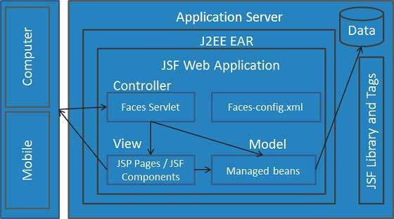
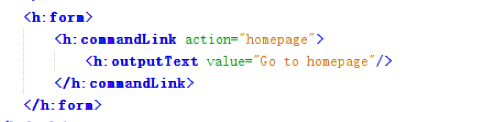
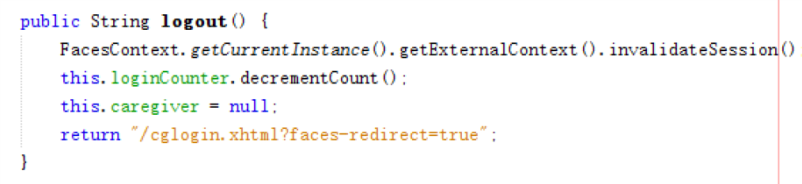
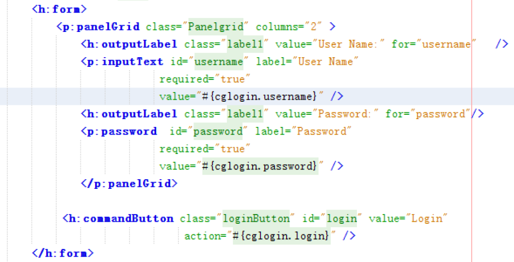

JavaServer Faces (JSF) is a Java specification for building component-based user interfaces for web applications and was formalized as a standard through the Java Community Process being part of the Java Platform, Enterprise Edition. It is also a MVC web framework that simplifies construction of user interfaces (UI) for server-based applications by using reusable UI components in a page.
One of JSF's major advantages is that it is both a Java Web user interface standard and a framework that strictly follows the model-view-controller (MVC) design pattern. The clear separation of user interface code (views) from application data and logic (models) makes JSF applications easier to manage. JavaBeans components as models containing application-specific functionality and data. View is fully in the domain of JSF and implemented by JSF UIComponents and Facelets respectively. In order to prepare the JSF context for providing page-to-application data access and prevent unauthorized or incorrect access to the page, all user interaction with the application is handled by a front-end "Faces" servlet (controller).
In the JSF page, we can use the action attribute to directly navigate any JSF UI Component. JSF will resolve the view name, pagename as pagename.xhtml extension, and find the corresponding view file page2.xhtml in the current directory. In our project, we use this function to go back to homepage from another page.
Also, we can navigate the page in the manged bean/named bean. By setting the action to the function of named bean/named bean, In the function we set the return of String, and set the name of the page we want to navigate. JSF will resolve the view name, pagename as pagename.xhtml extension, and find the corresponding view file pagename.xhtml in the current directory. In our project, we use this kind of navigation to log out.
If we want to use the form, we should first include the JSF Form Components, by including the namespace xmlns:h=http://java.sun.com/jsf/html, then we should use h:form. A minimalistic form contains at least some text fields, labels and a submit button to generate a post request. And the form data would be handled in the managed/named bean. We set the data by using expression language, and the submit button is connected to the method in the bean. For example, in our project, we pass the login username and password to the “cglogin” bean, and use the login() function to check if the password is correct and login.
JSF validation model defines a set of standard classes for validating the UI components. The JSF library defines a group of core tags that corresponds to javax.faces.validator.Validator implementations. Apart from the standard error messages validation model allows us to define the custom validations. Validations in JSF can be categorized into Imperative and Declarative. In our project, we use the validator on detect whether the form of the eamil address is correct, the method is included on the JSF, so it is standard vaildator.
When a form is displayed on a browser, the end user fills the input fields and hits a button, resulting in transporting the data to the server in an HTTP request using String formats. Before updating the model on the backing bean, these data have to be converted from Strings to the target objects (Float, Integer, BigDecimal, etc.). The reverse action will take place when the data have to be sent back to the client in the response and be rendered in the browser. JSF ships with converters for common types like dates and numbers. In cases where the backing bean property is a primitive type (Integer, int, Float, float, etc.), JSF will automatically convert the UI component value to the correct type and back. When the property is some other datatype, you need to provide your own converter.
When a user clicks a JSF button or link or changes any value in the text field, JSF UI component fires an event, which will be handled by the application code. To handle such an event, an event handler is to be registered in the application code or managed bean. When a UI component checks that a user event has occured, it creates an instance of the corresponding event class and adds it to an event list. Then, Component fires the event, i.e., checks the list of listeners for that event and calls the event notification method on each listener or handler. JSF also provide system level event handlers, which can be used to perform some tasks when the application starts or is stopping.
There are three types of event handler in JSF. The valueChangeListener, value change events get fired when the user make changes in input components. The actionListener, Action events get fired when the user clicks a button or link component. The Application Events, Events firing during JSF lifecycle: PostConstructApplicationEvent, PreDestroyApplicationEvent, PreRenderViewEvent.
JSF supports two programming models for displaying components: the direct implementation and the delegated implementation. When you use the direct model, components must decode themselves from, and encode themselves to, a graphical representation. When you use the delegated model, these operations are delegated to a renderer. which allows a component to be independent of a rendering technology (browser, portable device, etc.) and to have several graphical representations.
A renderer is responsible for displaying a component and translating user input into the component’s value. Think of it as a translator between the client and the server: it decodes the user request to set values to the component, and encodes the response to create a representation of a component that the client understands and can display.
JavaServer Faces is fully internationalized. The I18N capability in JavaServer Faces builds on the I18N concepts offered in the Servlet, JSP and JSTL specifications. I18N happens at several points in the request processing lifecycle. They include Determining the active Locale, Determining the Character Encoding, Localized Text and Localized Application Messages.
JSF and JavaScript can combine forces to develop powerful applications. In JSF 2.0, you can use <h:outputScript /> tag to render a HTML “script” element, and link it to a js file.
Also, several JavaScript functions are used to facilitate Ajax operations in JSF. They include Collecting and Encoding View State, Initiating an Ajax Request, Processing The Ajax Response, Registering Callback Functions, Determining An Application’s Project Stage and Script Chaining
The documentation of JSF is in a PDF document. The PDF document includes different chapters describing the framework. There is no online documentation for JSF, which is not very convenient for developers. The different chapters include different aspects of the JSF framework, which is quite complete and detailed.
The latest documentation/specification: JSF 2.3 the designated user interface standard for Java EE 8. It went final on 17 April 2017. However, although JSF 2.3 is complete, Java EE 8 is still under development.
The documentation of JSF is up to date, however, JSF has a rather slow speed of update, the latest version of JSF was published more than one year ago.
The JSF project is now part of the EE4J initiative. The activity of the project has been paused while it is being migrated to the Eclipse Foundation.
the future evolution must be based on the drawbacks existing now, first, let's give some disadvantages about the framework. It makes the simple tasks become difficult, Time and time again, when developing user interfaces with JSF, tasks that could be achieved quite easily using JavaScript become a giant hassle. JSF lacks flexibility, the JSF framework lets the developer down instead of rising to the occasion. A perfect example is the error messaging framework, which provides four alerting levels: info, warn, error and fatal. This type of inflexibility stalls projects, whereas a good web framework propels projects forward. Incompatibility with standard Java technologies, another key problem with JSF is that it doesn't work well with other standard Java libraries, with the Portal API being one, and JSTL, Java's standard tag libraries, being another. Primitive Ajax support, JSF 2.0 introduced Ajax support for basic interactions with components, but more complex Ajax based interactions, especially ones that work with UI frameworks like bootstrap.js and ember.js, are onerous. But more importantly, the templating framework, Facelets, is all static and provides no built in facilities for switching between faces asynchronously. This is a massive drawback when attempting to develop sites that provide a single page interface, or a portlet based type of experience.
the new version would focus on these drawbacks, otherwise the occupation of the market will decrease further, make the general structure more flexible, and increase the compatibility of standard Java technologies. on the conclusion, the JSF framework should learn and test some simple method to attract more attention from user, and at the same time, keep the good stuff itself.
In my opinion, JSF is a good framework, especially more than 10 years ago, comparing with Struts
Because JavaServer Faces is a standard Java technology, software development tools are fully empowered to offer advanced integrated development tools support for JavaServer Faces. The MVC structure makes developers can have a clear look, and not mess up the business logic. And all user interactions with the application are handled by a front-end "Faces" servlet.
To run the JSF2.2/2.3, the Servlet engine should support servlet 3.0 or later by including JSF JAR file, or a Java EE 7 server. The we should include the JSF compliant WEB-INF/web.xml file. In the JSF pages we should include the namespace xmlns:h=http://java.sun.com/jsf/html.
Normally, the learning curve of the JSF is steep. JSF does a lot of interesting stuff behind the scenes, but very few users understand it or appreciate it. That means troubleshooting complex problems becomes impossible, as developers often don't even know where to start. But if the developers are familiar with HTML and CSS concepts, it would be easier to learn.
https://javaee.github.io/javaserverfaces-spec/
https://github.com/javaserverfaces/mojarra